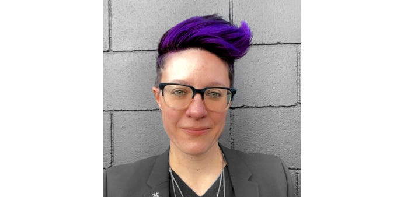

As the Director of Digital Services at CivicActions, what initially drew you to a career in civic tech?
I have always been drawn to careers that make a positive impact on society. It’s the same drive that ushered me towards my previous career as a high school teacher. What I discovered in civic tech was an excitement in being part of developing technologies that also are working to increase access to information and services — overall working for the better good. The thing I love about civic tech is the vast potential for innovation, with opportunities to develop new technologies and platforms that can address a wide range of social, economic, and environmental issues.
You have been at CivicActions for over 8 years now, having initially started as a Project Manager before being promoted to a Director. Can you share more about your career journey since starting at CivicActions in 2014 and how your role at the company has evolved?
When I joined CivicActions in 2014, we were just starting our journey as a company into providing digital services for the public sector. At that point in time, CivicActions was still growing and we were exploring how Federal projects could make a meaningful impact. For me, it was an excellent opportunity to grow as a leader and work with my colleagues to usher CivicActions into our next phase.
As we began taking on larger projects, we realized we needed to create more structure in how we approached our client services. Drawing from my extensive experience in delivery and leadership, I worked to develop our Program Management practice, which involves frequently partnering with our department leads from Sales to Delivery (Project Management, Product Management, Design, Engineering) to help make sure we have happy clients and healthy teams.
What role do you play when it comes to working with clients, like the Centers for Medicare and Medicaid Services (CMS)?
My number one role is to make sure that the project is successful. This success can look like a brilliant redesign such as the award winning Medicare.gov site, but it can also look like a happy team (client, designers, developers) working together to achieve their goals. I spend most of my days trying to be omnipresent and available, listening for accomplishments and challenges, and finding ways to lift up and support the team and client.
What are some of the biggest challenges you face in your role, and how do you overcome them?
With CivicActions’ Federal work, we tackle large-scale, high-visibility public platforms. These include a lot of team members, multiple separate cross functional teams, and numerous internal Slack channels. Overseeing such a large-scale and complex project with many moving parts often means I need to take a bird’s eye view to the entire project in order to make sure everything is humming along. I’ve cultivated this skill with years of practice, so it really helps me to determine our priorities, risks, and opportunities.
What’s been the most rewarding part of your job?
I love being able to point to our work and feel amazing about how we’re making services more accessible. We are creating solutions that benefit society as a whole. I am so proud of our work and the impact it has on people. On top of that, our team at CivicActions is so thoughtful, impact-driven, and inspiring — I find it so energizing to collaborate with this group of people everyday.
Are there any team success stories you would like to share?
As a trusted partner, we’re building with Centers for Medicare and Medicaid Services (CMS), not just for CMS. Our teams take a lot of pride in their work and love having a positive impact on the fed health industry. I’m extremely proud of the top notch work we do for CMS’s Medicare.gov site, which has won three awards since we launched the redesign and new wizards. That is the type of excellence that we strive for with our products in our programs.
Program management is as much about a healthy team as it is about a happy client. One way we make sure the client is happy is to make sure we’re being efficient in how we work and the tools we use. I am constantly scanning team conversations, looking for ideas on how to improve efficiency and make sure we aren’t wasting resources (people or dollars)! Over the last year alone, we have identified about $260K in annual savings for CMS by consolidating servers and adjusting pipelines, which saves taxpayer dollars and allows CMS to use the funds to continue building better products.
How would you describe the company culture at CivicActions?
Throughout every single day, I can feel, see, and embody CivicActions’ values of openness, care, and balance — they truly are ingrained in our company culture. This is true at all levels of the company: from how managers approach team members to directors collaborating on policies to team members supporting each other.
Any advice for someone looking to follow a similar career trajectory?
A passion for impact will take you far on this journey, but you’ll need to possess a strong desire for nurturing — what I mean by that is a lot of what I do daily is building on authentic relationships both internally and externally at CivicActions. You need to have a bartender’s personality, a marketing manager’s strategy, and a teacher’s organized patience — when combined, you will move mountains in this career path.
On a lighter note, what are some fun facts that people may not know about you?
I’m a huge music lover. One of my favorite activities is going to live music shows. I’ve seen over 350 bands live — not counting festivals! It was one of the things I missed the most during the pandemic, and I’m excited shows are happening again.
Another fun fact about me is that Halloween is my Christmas! I love all the things that come with the holiday, from the creativity of making my own costumes to the fun party decorations. Every year I buy one new thing to enhance the spooky vibes at the house, and last year it was a low-line fog machine that produces a professional grade cemetery-level fog line in the yard. I’m originally from Detroit and every year I travel back to my hometown for an epic Halloween celebration.